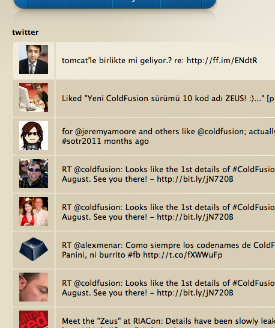
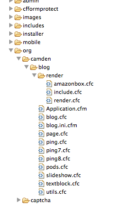

What is the BlogCFC renderer?
The renderer is a way for BlogCFC to display dynamically generated content in a page or post. The renderer can process just about anything that you can write a handler for, for example, putting in an rss feed result into a page or displaying a twitter search result. This sounds complicated but in actuality, it is easy to accomplish. It is almost like creating a custom tag but in a CFC.
To create a renderer all that is needed is to create the custom renderer CFC and put it in the render folder. After that, refresh the BlogCFC cache and it will be ready for use.
As an example, let's say that this is the blog page content as entered in page edit form body:
2 <br_twitter search="coldfusion" maxResults="10">
What would be rendered is this:

In the example above, "br_twitter" is the name of the renderer. The use of attributes is optional and not required. When BlogCFC processes the page/post, all attributes are passed to the renderer even if they are not declared in the CFC (attribute overloading).
Now let's go through what it takes to create that example renderer.
First step is to create the custom renderer CFC. In ColdFusion Builder (or other IDE), navigate the BlogCFC code to {blogcfcroot}/org/camden/blog/render. This is where the renderer cfc files are placed. For reference example, open the include.cfc render. This will give you a visual of a working renderer.

In this folder, create a cfc file named "br_twitter.cfc". The "br_" (BlogRenderer) is something to add so that there should never be a name collision between renderers or any future BlogCFC updates. After creating the file, add the code below as the entire content of the CFC.
2 <cffunction name="display">
3 <cfreturn "Renderer Works">
4 </cffunction>
5</cfcomponent>
Make sure to save the file then open the BlogCFC admin. Select "Refresh Blog Cache" from the left menu to clear the BlogCFC cache. This will make the renderer now available for use. Next is to create a page so that the renderer can be called. In the BlogCFC admin, select "Pages" from the left menu. Then select "Add Pages" on the right. On the page creation screen, add a page title of "Twitter". Leave the alias blank. Put the following in the body of the field:
Show Layout should be left at "yes". It should look like this when done:

Click the "Save" button.
It is now possible to go to the page by clicking on the url to the page that was just created. The body of the page should contain the text from the renderer. The attributes are currently ignored but will later become relevant. If someting went wrong then there would be no text where the renderer text should be. View the source of the page and look for where the render should be. The call to the renderer is probably there. If this happens, make sure the blog cache was refreshed and the renderer is in the correct place.
In the browser address bar, add "?reinit=1" to the end of the url and hit enter. This will now allow the blog cache to refresh on every call instead of doing it through the admin screen. Only do this in development. Normal blog operation will not need this. Now that the base of a renderer is working, it is time to it add the true guts. Take the following code and use it to replace the code that is already in the renderer. No modification to the page is necessary.
2 <cffunction name="display">
3 <cfargument name="search" type="string" required="false" default="">
4 <cfargument name="maxResults" type="numeric" required="false" default="50">
5 <cfset var resultRet = "">
6 <cfset var content = "">
7 <cfset var data = "">
8 <cfset var searchRes = "">
9 <cfset var generated = "">
10 <cfset var results = []>
11 <cfset var resultCount = arguments.maxResults>
12 <cftry>
13 <cfif len(arguments.search)>
14 <cfhttp url="http://search.twitter.com/search.json?q=#urlEncodedFormat(arguments.search)#" method="get" result="searchRes" timeout="5"/>
15 <cfif searchRes.responseheader.status_code is "200">
16 <cfset content = searchRes.fileContent.toString()>
17 <cfset data = deserializeJSON(content)>
18 <cfloop index="item" array="#data.results#">
19 <cfset arrayAppend(results, item)>
20 <cfif arrayLen(results) EQ resultCount>
21 <cfbreak />
22 </cfif>
23 </cfloop>
24 <cfif arrayLen(results)>
25 <cfsavecontent variable="generated">
26 <table>
27 <cfloop index="i" array="#results#">
28 <cfoutput>
29 <tr>
30 <td><img src="#i.profile_image_url#"</td>
31 <td>#i.text#</td>
32 </tr>
33 </cfoutput>
34 </cfloop>
35 </table>
36 </cfsavecontent>
37 </cfif>
38 <cfreturn generated>
39 </cfif>
40 </cfif>
41 <cfcatch type="Any" >
42 <cfreturn "">
43 </cfcatch>
44 </cftry>
45 <cfreturn "">
46 </cffunction>
47</cfcomponent>
Save the file and then reload your page. If reinit was added to the url, the results of the Twitter search should load. Otherwise the blog cache will need to be refreshed from the admin screen.
The code itself just runs a search against Twitter using the search attribute value. Since Twitter returns json data, it needs to convert it to something that can be easily output. To do this, the json data is converted to an array and then output. The output generated is done inside cfsavecontent so that the generated output can be stored in a var. That var is then returned to the caller and eventually makes it to the browser.
The renderer can be used for many things beyond Twitter searches, for example, pulling in static content, images, presentations, or loading rss feeds.
Here are some good tips to consider when creating a renderer:
- Avoid naming the renderer the same as a coldfusion tag. Remove the CF part if necessary .. eg.. use <include> instead of <cfinclude>
- Renderer name is case sensitive. If the case of the filename and the case of the tag in the page/post don't match, the renderer may not be run.
- The BlogCFC cache must be refreshed for it to pickup a new renderer.
- Any changes to the code in the renderer require a BlogCFC cache refresh.
#1 by darrell on 6/14/11 - 10:16 AM
Diagnostics Invalid token " found on line 1 at column 95. <br>The error occurred on line 120.
GeneratedContent [empty string]
HTTPReferer [empty string]
Mailto [empty string]
Message Invalid token " found on line 1 at column 95.
QueryString reinit=1
#2 by Raymond Camden on 6/14/11 - 10:18 AM